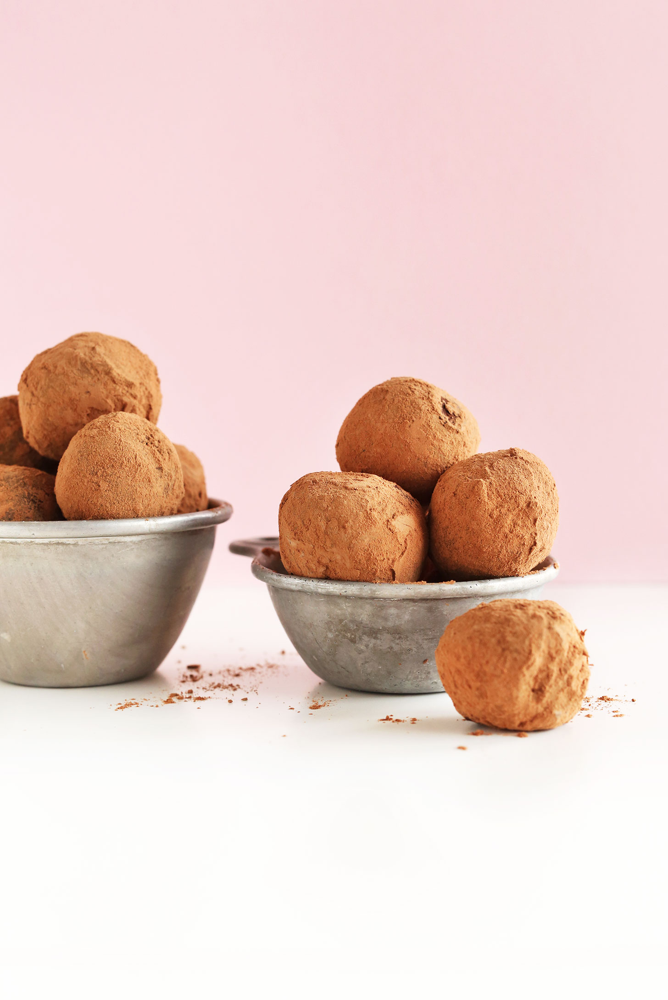

Vegan Dark Chocolate Truffles
Source:
2-Ingredient Chocolate Truffles
Author: minimalistbaker

Vegan, gluten-free dark chocolate truffles made with just 2 ingredients and simple methods!
So easy, creamy, delectable, and sinfully rich!
Ingredients
- 7 tablespoons of canned coconut milk
- 9 ounces finely-chopped vegan dark chocolate
- 1/2 teaspoon vanilla extract (optional)
- 1/4 cup unsweetened cocoa or cacao powder (optional for dustings / coating)
Instructions
- Place finely chopped chocolate in a medium-sized mixing bowl.
The finer the chocolate is chopped, the easier it will melt and the quicker the truffle-making process will go.
- In a separate small mixing bowl, add coconut milk and microwave until very warm but not boiling – about 25 seconds (alternatively,
heat in a small saucepan over medium heat until just starting to simmer).
- Immediately add coconut milk to chocolate and loosely cover with a cooking lid or towel to trap the heat in. Do not touch for
5 minutes. Then lift cover and use a mixing spoon to gently stir, trying not to incorporate air. Continue stirring until completely melted, creamy, and smooth.
- Add vanilla and stir.
- Set the mixture in the refrigerator to chill uncovered for 2-3 hours, or until almost completely solid.
If it comes out mostly clean, it’s ready to scoop. If there’s still wet chocolate in the center, continue refrigerating.
- Once chilled and firm, prepare a small dish of cocoa or cacao powder for rolling (optional).
- Use your hands to gently but quickly roll/form the chocolate into balls.
- Enjoy truffles immediately, or refrigerate for 1-2 hours or overnight. This allows them to set and firm up.
- Store truffles covered in the refrigerator for best freshness. To serve, let come to room temperature for 10-15 minutes before serving for optimum creaminess.